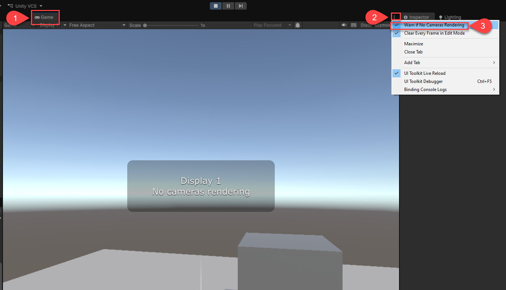
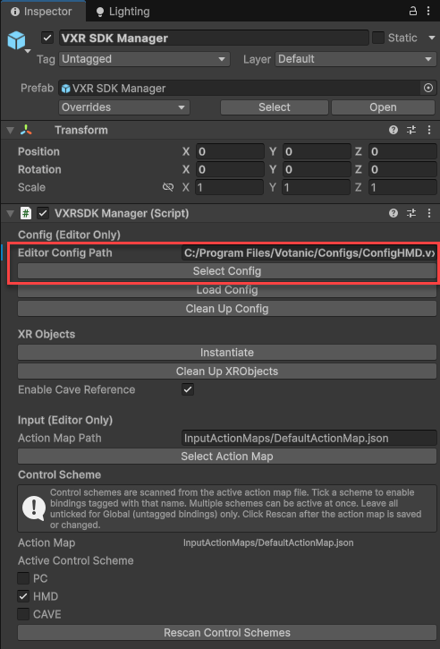
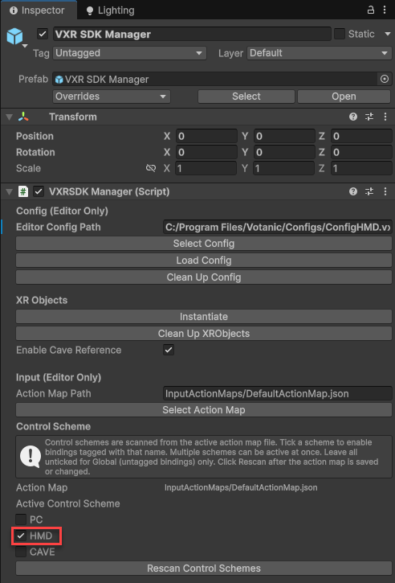

Frequently Asked Questions
How to turn off "no cameras rendering" warning on my game view?
Go to Game tab > triple dot icon (on top right). Then uncheck Warn If No Cameras Rendering to turn off the warning.

How to connect to a head-mounted display (HMD)?
- Turn on and connect your HMD to the computer.
- Select VXR SDK Manager in the hierarchy.
- Go to VXR SDK Manager component and click Select Config. Then pick
ConfigHMD.vxrc.

- Set the active control scheme to HMD.

- Play the scene and wear your HMD to see your project in HMD.